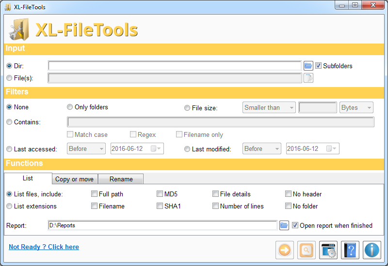
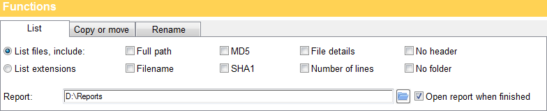
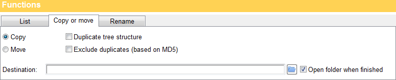
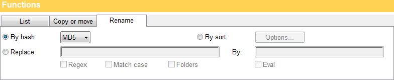
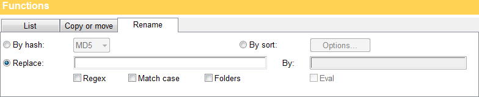
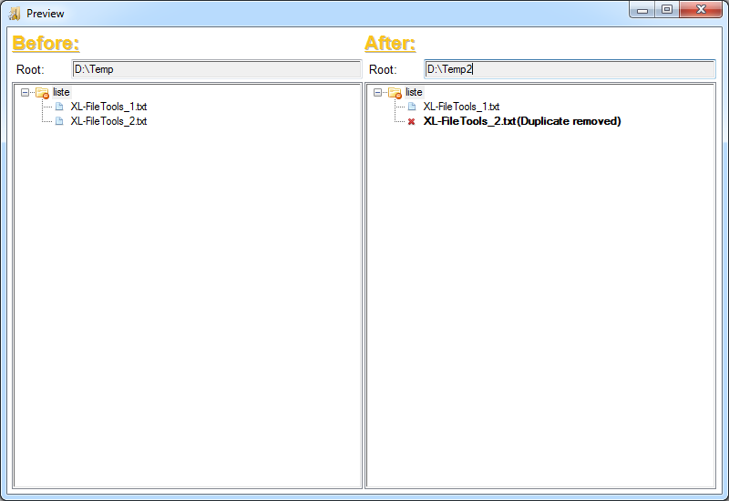
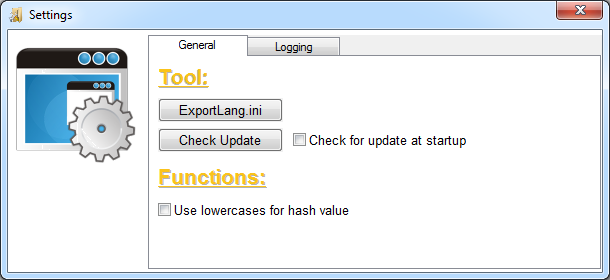
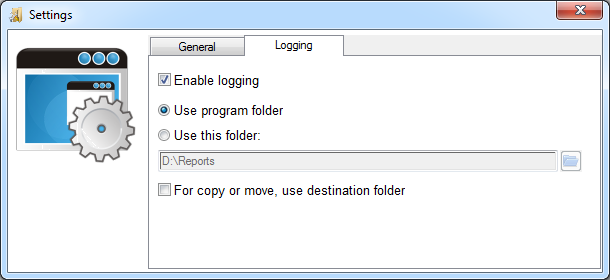

|
XL-FileTools
Copyright (c) 2016 Alain Rioux
|
| See Credits about the logo |
Main window

The main interface is divided in four parts:
- Input: You can select a folder, a single file or multiple files.
- Filters: If you select a folder as input, you can use filters to restrict
the scope of the process. Default is no filter, but you can select any of the five filters:
- Only folders: If you select this filter, only a few functions and options
will be available. The most interesting thing you can do with this filter is to copy a tree
structure with empty folders.
- File size: This filter applies to files only.
- Contains: The keyword or regular expression applies to the relative path
(folder or file, but excluding input directory). For example, you can use the expression
\.jpg$|\.gif$|\.bmp$ as a filter to select only
image files.
- Last accessed: This filter applies to files only.
- Last modified: This filter applies to files only.
- Functions: There are three categories:

- List: There is no preview for this category.
- List Files: Produces a report in the TSV (tab-separated values)
format. There are six informations you can include are: full path,
filename, MD5 hash, SHA1 hash,
file details (file size, last accessed date and last modified date)
and number of lines (for text file only). Except for the full path,
all other informations apply to files only. By default, report includes a header with
the name of each columns, but you can disable it with the No header
option. With No folder option, only files will be included in report.
- List Extensions: Produces a report in the TSV (tab-separated values)
format. The report contains two columns. The first column is the list of extensions found
and the second column contains the count for each extension.
- Report: This is the folder where the report will be saved. The
folder is automatically saved.

- Copy or move: There are two options: Duplicate tree
structure (subfolders) and Exclude duplicates (based on MD5).
- Destination: For this category, you must provide a destination folder.
Before copying or moving files, XL-FileTools must check if there is enough space on the
destination volume.
- About move: Move is the fastest, because it simply renames files. If
you select Duplicate tree structure option, it will also create the
subfolders. At the end of the process, XL-FileTools will delete empty folders in the
input directory. If some files have not been moved (if you use a filter or in case of
error), they will not be deleted.

- Rename: There are three categories:
- By hash: This function renames file by their hash value (MD5 or
SHA1).
- By sort: This function does two things. First, it sorts files
in each folders. Secondly, it renames the files with an incremental value to keep
files sorted. There is a lot of options that you can select in the following window:
- Sort options: You can sort files based on the alphabetical
order, the file size, the last accessed date
or the last modified date.
- Rename options:
- Value type: Type of incremental values. Available types are
decimal (1,2,3,...), lowercase alphabet (a-z,aa-zz,...),
uppercase alphabet (A-Z,AA-ZZ,...), lowercase hexadecimal
(0-f,00-ff,...), uppercase hexadecimal (0-F,00-FF,...)
and roman numerals (I,II,III,IV,...) .
- Length (min): This is the minimal number of digits to represent
the incremental value. As an example, with a length of 3,
the value 1 becomes 001.
- Start with: This is the initial value.
- Step by: This is the difference between each value.
- Prefix (optional): You can add a fixed string at the beginning of
each filename (see note about reserved characters).
- Suffix (optional): You can add a fixed string at the end of each
filename (see note about reserved characters).

- Replace-By: You can replace any part of the filename or in a
subfolder name. Avialable options are:
- Regex: If your expression is a regex, you should check this option.
If not checked, every special characters will be mark as literal (escaped).
- Match case: With this option, expression must match uppercases
and lowercases.
- Folders: By default, your expression will apply to filenames only.
With this option, your expression will apply on subfolder names instead.
- Expression in replacement (By): This is the expression to use as
replacement (see note about reserved characters).
By default, the expression is interpreted as a string like the replace function in
XT-Tools which means that you can use capture groups (equivalent to sprintf() with Eval option, see examples
below).
-
The Eval option tells XL-FileTools to evaluate the expression so you can
also use some Perl functions (see here for list of functions). Please note that this can be dangerous
if you don't know what you're doing. You really should use this with preview mode before
doint it for real. Some examples:
| Operation |
Filename |
Replace: |
Regex: |
By: |
Eval: |
Results |
Remove file extension |
XL-FileTools-20060611.txt |
\.\w+$ |
Yes |
|
No |
XL-FileTools-20060611 |
Shift data |
XL-FileTools_20060611.txt |
(XL-FileTools)_(\d{8}) |
Yes |
$2\-$1 |
No |
20060611_XL-FileTools.txt |
To lowercase |
XL-FILETOOLS_20060611.TXT |
(.+) |
Yes |
\L$1 |
No |
xl-filetools_20060611.txt |
To UPPERCASE with \U |
XL-FileTools_20060611.txt |
(.+) |
Yes |
\U$1 |
No |
XL-FILETOOLS_20060611.TXT |
To UPPERCASE with sprintf |
XL-FileTools_20060611.txt |
(.+) |
Yes |
sprintf("\U$1") |
Yes |
XL-FILETOOLS_20060611.TXT |
To UPPERCASE with uc |
XL-FileTools_20060611.txt |
(.+) |
Yes |
uc($1) |
Yes |
XL-FILETOOLS_20060611.TXT |
Convert decimal to UPPERCASE letter |
XL-FileTools_1.txt
XL-FileTools_2.txt
XL-FileTools_3.txt
|
XL-FileTools_(\d+) |
Yes |
sprintf("XL-FileTools_").chr($1+64) |
Yes |
XL-FileTools_A.txt
XL-FileTools_B.txt
XL-FileTools_C.txt
|
Format number with leading zeroes |
XL-FileTools_1.txt
XL-FileTools_2.txt
XL-FileTools_3.txt
|
XL-FileTools_(\d+) |
Yes |
sprintf("XL-FileTools_"."%03d", $1) |
Yes |
XL-FileTools_001.txt
XL-FileTools_002.txt
XL-FileTools_003.txt
|
Why dangerous? Try this... |
XL-FILETOOLS_20060611.TXT |
.+ |
Yes |
exit(0) |
Yes |
Program exits. |
- Some notes about renaming functions:
- Reserved characters: Some
characters are reserved and can't be used for file and directories (See here
for more details). If you try to use it, you will get error. This include the
following characters:
- < (less than)
- > (greater than)
- : (colon)
- " (double quote)
- / (forward slash)
- \ (backslash)
- | (vertical bar or pipe)
- ? (question mark)
- * (asterisk)
- When renaming, if the renamed filename already exists in the destination folder,
it will be renamed with an incremental value (1,2,3,...)
Validation on the fly
XL-FileTools, like my other tools, validates controls on the fly. Everytime you
click on a checkbox, you select a different option, you change text in a textfield,
etc., controls are enabled or disabled according to your changes.
Regex and replacement expression are also
evaluated on the fly and the status will be indicated with a colored border around
the corresponding textfield.
- Green means OK ;
- Yellow means Warning ;
- Red means Error ;
To see warning or error message, previous controls must meet requirements. In
the footer of the Main Window, if Not Ready ?
Click here is visible, click on it if you want to know which step comes
next.
Preview Window

With Preview Window, you can see what's gonna happen before
doing it for real. The Preview is available as soon as your input and selected filter
options are validated, but for the left side (Before) only. When
your function options are set and validated, the results will be shown on the right
side (After).
Take note that there's no Preview for the List category.
Some errors and messages can be shown in the Preview Window but
not all. For example, errors related to file system persmissions can't be evaluated
in preview mode.
Settings window

General
In Tool section, we have the following functions:
- Export Lang.ini: Use this function to translate XL-FileTools GUI.
See Translation for help about this
functionality.
- Check Update: Check on le-tools.com if a tool update is available.
- Check for update at startup: Check if and update is available
everytime XL-FileTools is started.
In Functions section, you have the following options:
- Use lowercases for hash value: This option applies to
List and Rename functions.
Logging

In Logging section, we have the following options:
- Enable logging: If checked, errors and activities are logged
in a text file (XL-FileTools.log). You must select a directory
where the log file will be created:
- Use program folder: Folder where the program is.
- Use this folder: Enter the folder where you want the
log file to be saved.
- For copy or move, use destination folder: If checked, log
file will be saved in the destination folder when copy or move function is used.
Selected option above remains for other functions.
XL-FileTools
Copyright
(c) 2016 Alain Rioux